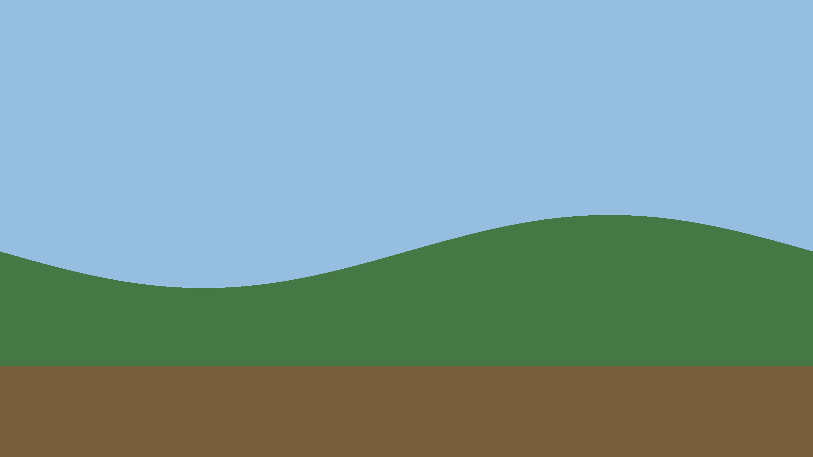

Výlet na rozhlednu Hůrka: trasa, ceny a fotky
Rozhledna na vrchu Hůrka je po opravě znovu otevřená. Nový ochoz nabízí výhled na celé údolí Bystřice, za dobrého počasí až na hřebeny Jeseníků. Cesta z obce zabere pěšky asi hodinu a vede po značené stezce lesem.

Oprava trvala dva roky a stála přes čtyři miliony korun. Většinu peněz dal kraj, zbytek obec a sbírka mezi místními. Na ochoz vede 112 schodů, nahoře je nová stříška a tabule s popisem okolních vrcholů.
Kudy se vydat
Nejkratší cesta začíná u hasičské zbrojnice. Po žluté značce projdete kolem rybníka a lesem stoupáte k vrcholu, celkem asi tři kilometry a dvě stě metrů převýšení.
Delší okruh vede po modré přes Horní Lhotu a vrací se po žluté. Měří osm kilometrů a hodí se i pro rodiny s kočárkem, protože nemá žádné schody ani prudké stoupání.
- U rozhledny je lavička a stojan na kola, ale žádný obchod ani občerstvení, takže si vezměte vodu s sebou.
- Psi mohou nahoru jen v náručí, schodiště má mezery mezi stupni a malým tlapkám nesvědčí.
- V zimě se otevírá jen o víkendech, když není na schodech led, aktuální stav hlásí obecní web.
Kdo jednou vyjde nahoru za jasného rána, ten se vrátí. Takový výhled jinde v okrese nenajdete, říká kastelán rozhledny Josef Mareš.
Vstupné
| Vstupenka | Cena | Platnost |
|---|---|---|
| Dospělí | 60 Kč | 1 den |
| Děti a senioři | 30 Kč | 1 den |
| Rodinná | 150 Kč | 1 den |
| Permanentka | 1 200 Kč | 365 dní |
Fotky z otevření


Při slavnostním otevření přišlo na vrch přes tři sta lidí. Hrála dechovka, děti soutěžily v hledání pokladu a starostka přestřihla pásku spolu s nejstarší občankou obce, které je devadesát čtyři let.
Most přes Bystřici

Na cestě k rozhledně přejdete opravený most přes Bystřici. Od jara na něm platí zákaz vjezdu aut, pěší a cyklisté ho mohou používat bez omezení.
Další výlety po okolí najdete v rubrice Výlety. Tipy a fotky z vašich cest posílejte na adresu redakce, nejlepší zveřejníme v příštím čísle zpravodaje.